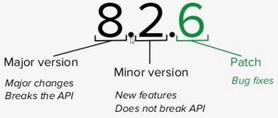

Basics
https://github.com/nodesource/distributions
run index.js
node -v
npm -v.gitignore
node_modules/global modules
| sass | npm install -g sass |
|---|---|
| nodemon | restarts Node app when file changes |
| live server | refresh browser when file changes |
nvm
Tool to switch between different node versions.
npm
- node package manager
npm -vconfig
set
npm config set init-author-name "James Layne"
npm config set init-license "MIT"get
npm config get init-author-namedefaults
npm config delete init-author-nameinit
in project directory:
manual
npm initauto
npm init -yinstall
| --save | adds to package.json |
|---|---|
| --save-dev | dev dependencies |
| -g | global install |
npm install 'package'
/* before npm 5.0 */
npm install 'package' --savedev dependencies
not deployed to production
npm install 'package' --save-devglobal
for modules you want to use in the command line
- installs on machine
- not package.json
- not node_modules
npm install -g 'package'
/* shows global install dir */
npm root -gspecific version
npm install 'package@version'
/* example */
npm install lodash@4.17.3 --saveuninstall
npm uninstall 'package'
/* before npm 5.0 */
npm uninstall 'package' --savedev dependencies
npm uninstall 'package' --save-devglobal
npm uninstall -g 'package'update
npm update 'package'versioning
package.json
"package": "^4.17.4"
| ~ | patch version |
|---|---|
| ^ |
default
|
| * | all versions |
| none | installs exact version |
list
/* show all dependencies */
npm list
/* top level dependencies 1, 2, .. */
npm list --depth 0index.js
index.js
const 'name' = require('module');package.json
/* downloads all dependencies */
npm install
/* downloads non dev dependencies */
npm install --productionscripts
package.json
"scripts": {
"start": "node index.js",
"server": "live-server",
"sass": "sass --style=compressed --no-source-map
--watch styles/sass/master.scss styles/master.css"
}- npm start
- npm run server
- npm run sass